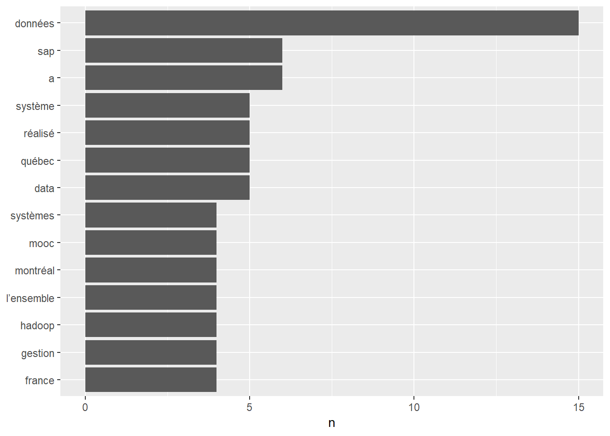

Chapter 2 Resume_analysis
knitr::opts_chunk$set(warning=FALSE, message=FALSE, include=TRUE)DATASET_DIRECTORY <- "./DATA/"##CV <- "2019_last.docx"
##LANGUE <- "en"
CV <- "ébauche_v5.docx"
LANGUE <- "fr"
FILENAME <- paste(getwd(), DATASET_DIRECTORY, CV, sep="")Filtre des occurences > \(3\)
